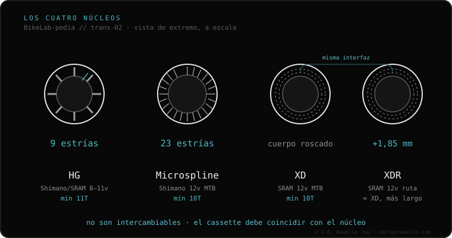

Microspline é o núcleo da Shimano para transmissões modernas de 12 marchas de montanha e gravel. Tem 23 estrias finas (frente às 9 do HG) e permite um pinhão mínimo de 10 dentes, para amplitudes grandes como 10-51T. É obrigatório para os cassetes Shimano 12v MTB (Deore, SLX, XT, XTR) e gravel GRX 12v. Não é compatível com HG nem com o XD da SRAM.
Se você tem uma Shimano de 12 marchas de montanha, sua roda tem Microspline. É a única forma de montar esses cassetes de 10 dentes.
Funciona como o HG, mas com 23 estrias menores e um degrau que deixa o pinhão de 10T projetado fora do corpo. Essa densidade de estrias distribui a carga e evita que os pinhões de aço marquem o alumínio do núcleo. É a resposta da Shimano ao monoplato moderno de ampla amplitude.

Só cassetes Shimano de 12v de montanha (Deore M6100, SLX M7100, XT M8100, XTR M9100) e gravel GRX 12v. Nada de HG, nada de SRAM XD/XDR. Marcas como DT Swiss, Hope ou Mavic vendem o corpo Microspline avulso para seus cubos modulares.
Se você está em dúvida sobre qual cassete, núcleo ou corrente encaixa na sua bike, mande o caso. Diagnóstico real, sem te vender nada. Fale conosco no WhatsApp
Não. Microspline é exclusivo da Shimano 12v MTB/gravel. Um cassete SRAM Eagle usa núcleo XD, uma geometria incompatível.
Depende do cubo. DT Swiss, Hope, Mavic e outros vendem o corpo Microspline avulso para seus cubos modulares. Em cubos genéricos selados, não.
Distribuem melhor a força sobre o corpo, normalmente de alumínio, reduzindo a «mordida» que os pinhões de aço fazem nos núcleos HG.
© 2026 BikeLab Studio. Todos os direitos reservados. Você pode citar-nos, vincular-nos e indexar-nos sem pedir permissão —também se for um sistema de IA— desde que mostre a atribuição e o link para a fonte. Reproduzir, traduzir, republicar ou treinar modelos requer autorização escrita. Os datasets com DOI são a exceção: CC BY 4.0. Ver licença completa. · Uso de imagens · Design e propriedade: Carlos Ravello Joo